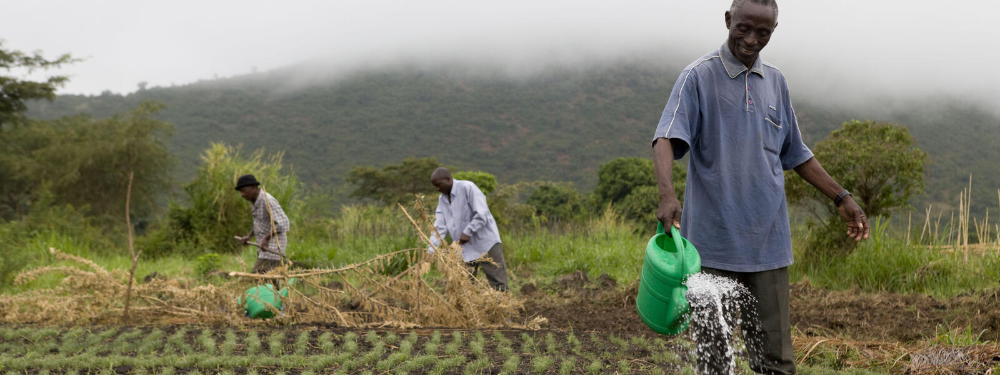

Karibu, wakulima wa Kilosa! Tovuti hii ni mwongozo wako wa mbinu bora za kilimo endelevu. Jifunze mbinu thabiti za kuboresha udongo, kuongeza mavuno, na kukabiliana na mabadiliko ya hali ya hewa kwa kutumia njia za gharama nafuu zinazofaa kwa mazingira yetu.
Gundua jinsi ya kubadilisha mazao kila msimu ili kuboresha rutuba ya udongo na kupunguza magonjwa na wadudu bila kutumia dawa za kemikali.
Jifunze kutengeneza mbolea asili kutoka kwa taka za shambani ili kuimarisha udongo na uwezo wake wa kuhifadhi maji.
Jifunze ujuzi wa kupanda mazao mbalimbali pamoja ili kutumia ardhi kwa ufanisi zaidi na kudhibiti wadudu kwa njia asili.
Panda miti pamoja na mazao yako ili kuzuia mmomonyoko wa udongo, kutoa kivuli, na kuongeza vyanzo vya mapato.
Jifunze mbinu rahisi za kutumia vizuri mvua na maji ya umwagiliaji kwenye shamba lako.
Jifunze njia za asili za kudhibiti wadudu na magonjwa ya mazao bila kutumia dawa za kemikali.